1) Under the hood of p5 sketches: a first look at index.HTML
Until now, everything we have done ––drawing shapes, making them move, responding to user actions, and more –– we have done by writing code on one file: the file that holds our setup() and draw() functions. This file is called sketch.js, as you can see on the p5 editor:
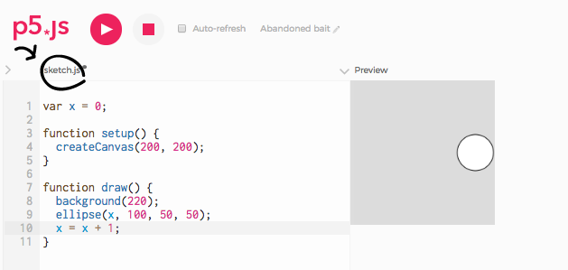
But there is more to our p5 sketches than just this file. Let's take a look at the other files the p5 editor includes in our projects. On the p5 editor, click on the arrow at the top left of the text area:

This opens a sidebar with a list of files ––you might remember this is where we added our image and sound files on Unit 3 (LA 3.2). These are the files that make up your p5 project: there is sketch.js, but there are also others:
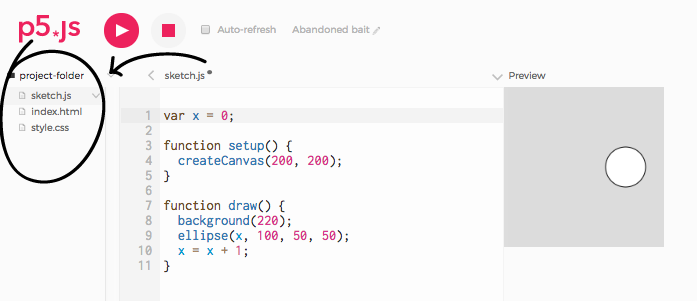
Today we will focus on index.html. index.html is the file the p5 editor opens when we hit 'play'. In the same way that word processors open .docx files, and music players open .mp3 files, Internet browsers open .html files. Our p5 sketches are web pages, defined by index.html, and rendered by the browser. Click on index.html to look at its content:
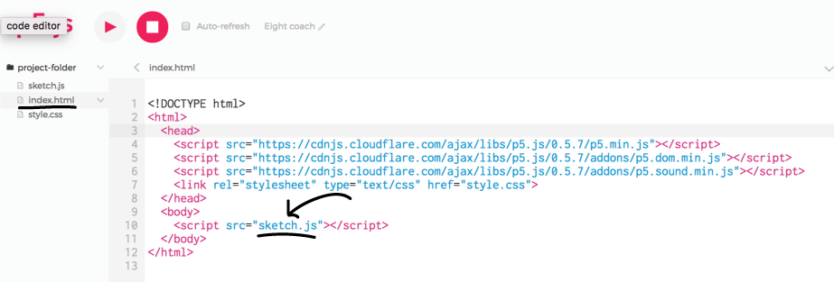
All the lines of code you see here were added by the p5 editor when we created our p5 project. Notice line 10: it references our sketch.js file. It is because of this line that we see our canvas on the page: without it, the code we write in sketch.js would not be executed at all, and we would see just a blank page ––try it! Delete line 10 and run your sketch. Do you see your canvas?
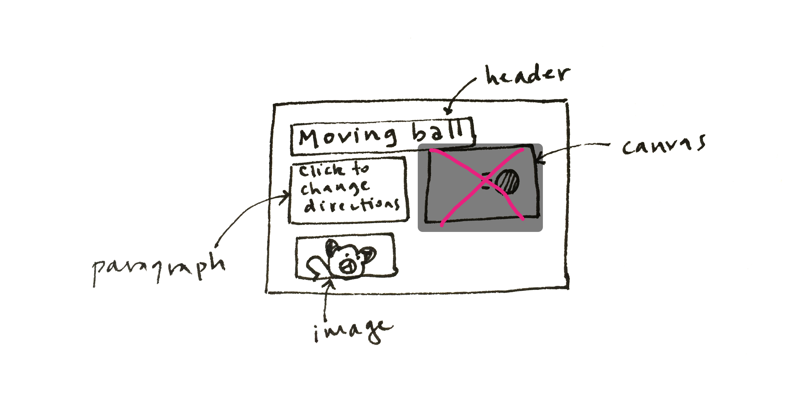
In the next section, we will add a header, a description, and an image to our page, starting from a blank HTML page. Once we have understood how HTML works, we will bring our canvas back.
2) Add a header and a paragraph to index.html
HTML stands for HyperText Markup Language. It describes the structure of web pages. HTML allows us to "mark up" content (like text) to tell the browser how to render it. For example, here is an HTML file and, beside it, the page as rendered by a browser:

The text "Moving ball" is has a <h1> "mark" around it. The text "Click to change direction" is marked with <p>. These "marks" higlighted in colors are called HTML tags. The h1 tags tell the browser to render the text "Moving ball" as a header (in big, bold letters). The p tags tell the browser to render the text "Click to change directions" as paragraph text (in small, thin letters). The img tag tells it to render an image, and also where that image is stored (a file called "panda.jpg").
Now that you understand the basic HTML structure, you will write some yourself. Delete all lines in your index.html file that are between <html> (line 2), and </html> (line 11).
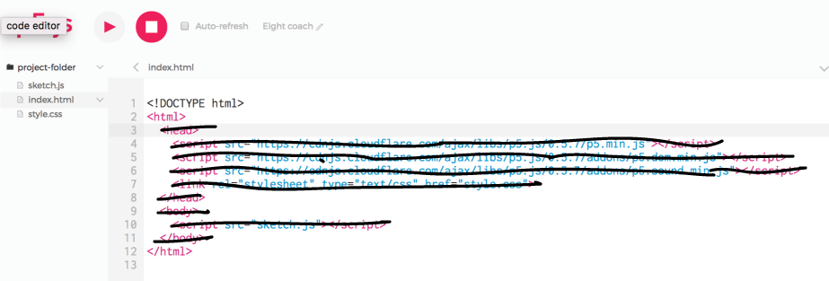
Now you have a raw, bare-bones HTML file:
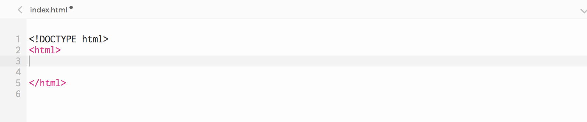
Paste the following text (or any other text you like) somewhere between <html> and </html>. Don't worry about blank lines: when rendering your HTML code, the browser will ignore them.
Moving ball
Click to change directions
Run your sketch. You have just written a web page with some text in it! The code in your index.html file has been rendered by the browser on the frame to its right, titled Preview. Notice that the two lines look the same (they are both rendered in thin and small letters), and that the line break was ignored.
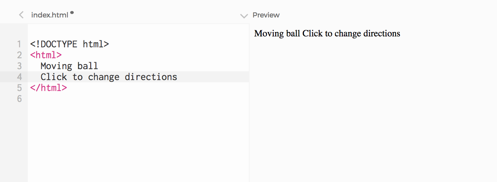
Now let's use HTML markup to tell the browser to render "Moving ball" as a header (in big, bold letters), and "Click to change directions" as paragraph text (in thin, smaller letters). To do this, add the following HTML tags to your index.html file (the tags are in pink):
<h1>Moving ball</h1> <p>Click to change directions</p>
Run your sketch, and notice that the format has changed, and that both h1 and p are displayed one below the other, as if there was a line break between them.
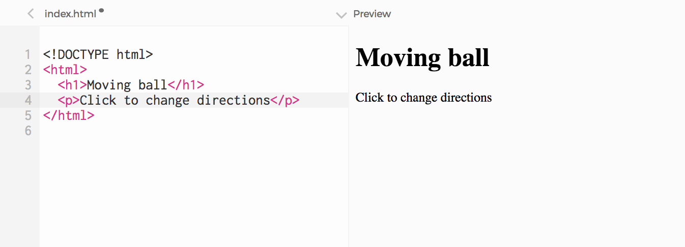
We can also use other tags to mark important parts of the text. Try this adding these tags to your paragraph:
<p> <strong>Click</strong> to change <em>directions</em> <p>
Notice that the word surrounded by <strong> and </strong> is rendered in bold text, and the word surrounded by <em> and </em> is rendered in italic text (em stands for emphasis):
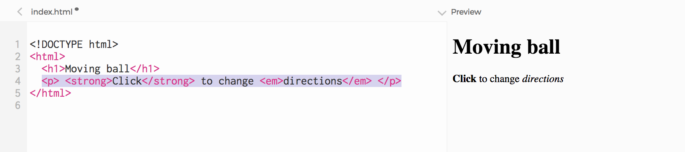
Exercise: add three headers and three paragraphs to your page, with any text you like. Use the strong and em tags to highlight parts of the text.
3) Add images
There are many different types of HTML tags we can add to a page. We have seen h1 (header 1) and p (paragraph); there are also h2, h3, h4 (header 2, header 3, header 4), a (links to other pages), img (images), and many many others ––if you are curious, you can a full list here.
Let's create an image by using the <img> tag. We need to tell the browser where the image is stored, by specifying its file address:
<img src="http://tinyurl.com/l8uax55" />
Above, the "src" attribute of <img> is set to the address of the panda image we want to draw (src stands for "source"). Attributes give the browser additional information about how to render content.
When we run the sketch now, an image is rendered on the page:
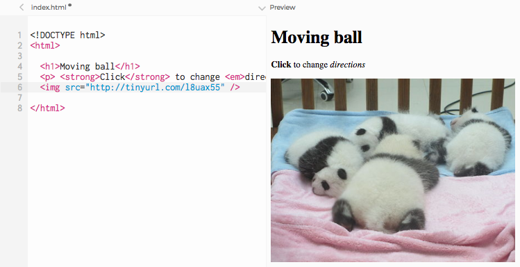
Exercise: Add three images you find online to your page. One easy way to find images that aren't too big for your sketch is to look for an Image on a search engine like Google or Yahoo, and filter the size to be Icon or Small (the screenshot below is from Google image search):
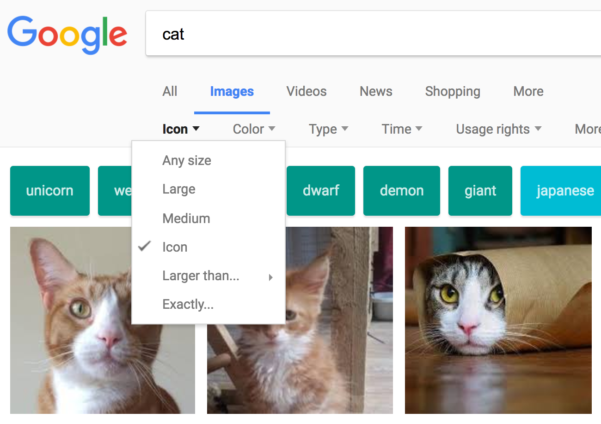
To get the address of an image, right-click on it and click "Copy Link Address", or "Copy Image Location" (depending on the browser you are using). Then paste the address on your HTML code.
4) Understand the structure of the page: the Document-Object Model (DOM)
As we have mentioned, <h1>, </h1>, <p> and </p> and <img> are all HTML tags. You might have noticed they often come in pairs:
- <h1> is a begin tag. Together with its end tag </h1> it defines an HTML element.
- <p> is also a begin tag, and together with its end tag </p> it defines another HTML element.
- <img src=" "/> is a begin and end tag, combined: it defines an HTML element on its own.
HTML elements are the building blocks of HTML pages.
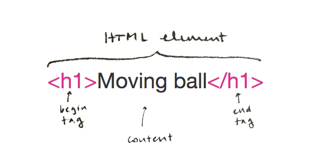
HTML elements can contain text, like the h1 and p elements we created, and other content like images. They can also contain other HTML elements. For example, our p element contains a strong element and an em element. And notice that <html>, which has been in our code all along, is also a begin tag: paired with its end tag </html> it also defines an HTML element. All the elements we added between <html> and </html> (the h1 element, the p element, the img element) are children of the html element:
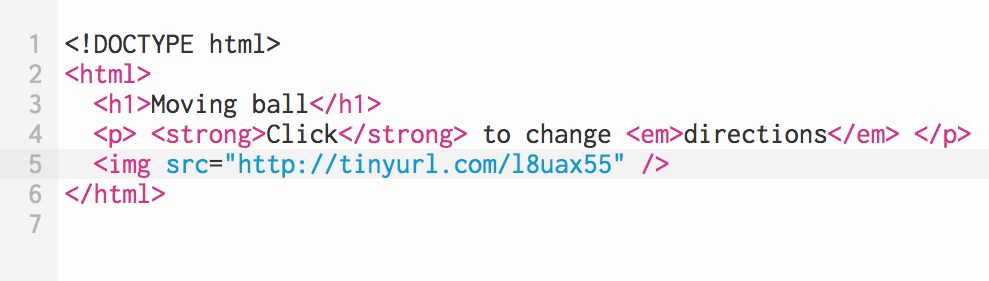
You can visualize your HTML page as a structure where the html element is the parent of all other elements:
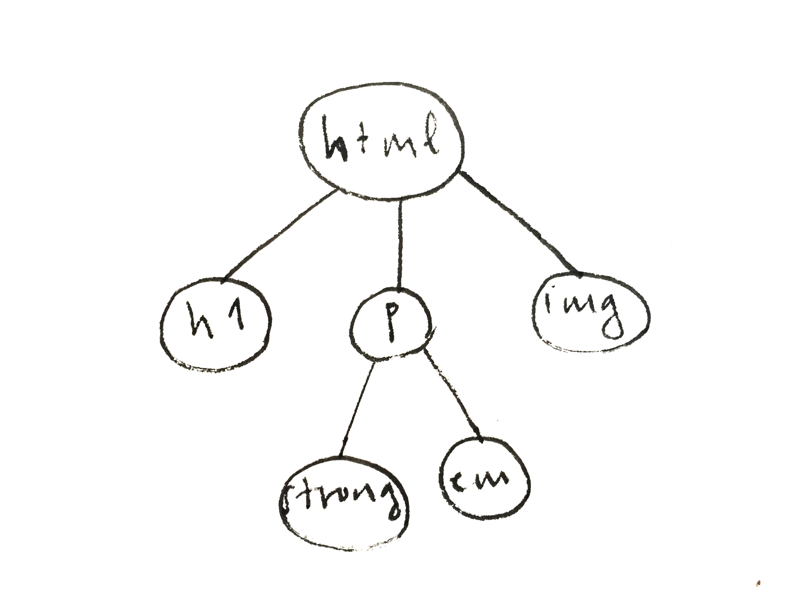
This kind of structure is called a tree structure. Look at it upside down: html is like a trunk that has branches growing out of it, and each branch can have more branches growing out of them as well.
This tree of HTML elements is called DOM (Document Object Model). This is an important concept that we will come back to in the next learning activity. For now, just know that HTML elements can contain other elements, and start thinking of your pages as a tree structure.

Move this to the bottom, after getting the canvas back in (so that we also add head and body, and this is recognizable in the cartoon on LA 2)
5) Bring the canvas back
Remember we started the previous step by deleting all the lines in the html file:
Without these lines, our canvas disappeared. We can see the title, paragraph and image, which we added to the index.html file, but not the canvas, which is added by the line "createCanvas" in the sketch.js file.
If we want to see our canvas on the page (and anything we draw on it), we need index.html to reference sketch.js, and the p5 library.
Let's take another look at the lines we deleted. To get a new index.html file, create a new sketch. Open the index.html file by finding it on the sidebar like we did before:
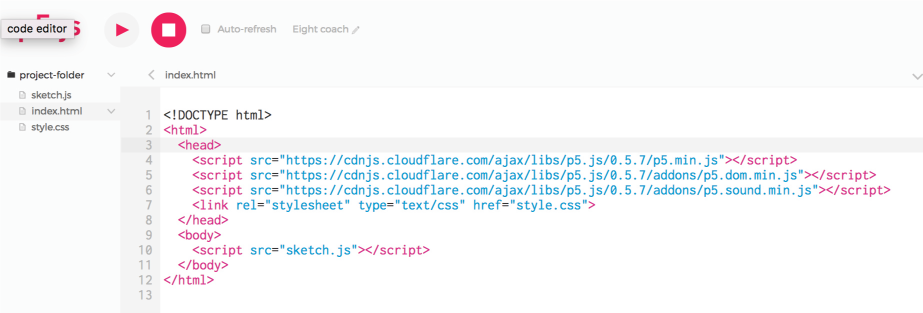
The lines we need back are the ones that reference
sketch.js (line 10), and p5.min.js (line 4)
Let's add these back to index.html:
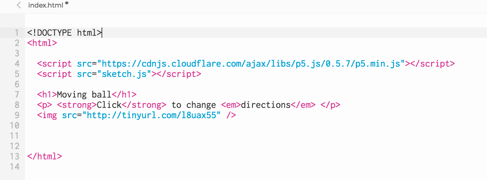
Run the project again: now we can see both our canvas, and the HTML elements we created around it. We created the paragraph, title, and image elements by writing directly into the index.html file. The Canvas is also an HTML element, but we created it in a different way: by calling createCanvas() from sketch.js.
We need sketch.js to run because that's where createCanvas is, and also the code that makes our ball move and draw ––after all, sketch.js is where our setup and draw functions are, where declare variables, and call p5 functions like fill and ellipse, or translate.
Bring it back in and run your code. What happens?
You probably got an error, because the p5.min.js file is missing. We need it for our sketch to run. p5.min.js is the p5 library file. This is where fill, rect, and all the other p5 functions are defined. A library is a collection of functions and other resources that programmers can use on their own projects. In this case, the p5 library is a collection of functions (like fill and ellipse) that programmers (like you!) can use on their own projects (like our ellipse-moving-to-the-right sketch). Without the p5 library, the browser wouldn't know what you mean when you write fill, ellipse or translate in your code.
Run project. It works. But there are more lines in index.html ––what do we need those for?
For this project, we don't, but we do (and will) for others: we need p5.sound.min.js if we want to play any sounds; we need p5.dom.min.js if we want the next learning activity to work.
Exercise: Choose one of your previous p5 sketches, and add a title, a paragraph that explain what it does, and a related photograph to it. Do this by adding HTML elements to your project's index.html file.
Exercise: Draw a tree structure that represents your webpage.